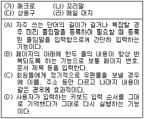
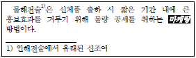
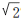
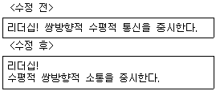
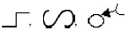
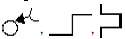
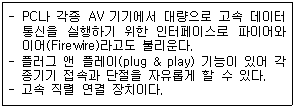
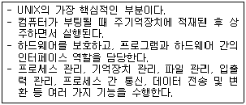

워드프로세서-(구-1급) (2010-05-16 기출문제)
1과목: 워드프로세싱 일반
1. 다음 중 캐시 메모리(Cache Memory)에 대한 설명으로 옳지 않은 것은?
- 주로 SRAM을 사용한다.
- 저장된 내용을 읽고 변경할 수 있으며 휘발성의 특징을 가지고 있다.
- 기억장치 중에서 가장 빠른 장치로 동일 기억 용량 당 가격도 가장 비싸다.
- 중앙처리장치와 주기억장치 사이에서 실행속도를 높이기 위해 사용되는 기억장치이다.
(정답률: 58%)

2. 다음 중 소트(Sort)에 대한 설명으로 옳지 않은 것은?
- 한 번 정렬된 내용을 오름차순 혹은 내림차순으로 재배열할 수 있다.
- 표에서 특정한 열에 대해서만 정렬할 수 있다.
- 오름차순은 숫자 →대문자 →소문자 →한글 순으로 정렬된다.
- 큰 것부터 작은 순서대로 정렬하는 것을 내림차순 정렬이라고 한다.
(정답률: 54%)
3. 다음 중 커닝(Kerning)에 대한 설명으로 가장 적절한 것은?
- 2개 이상의 이미지를 적절히 연결시켜 변환, 통합하는 기법이다.
- 실세계의 연속적인 도형을 표현할 때 매끄러운 직선이 거칠게 보이는 현상을 감소시키는 작업이다.
- 3차원 그래픽에서 그려진 물체의 각 면을 적절하게 색칠하고, 효과를 적용하여 화상의 실체감을 강조하는 작업이다.
- 글자와 글자 사이를 적절한 간격으로 조정하는 작업으로 광고 등에서 많이 사용하는 작업이다.
(정답률: 76%)
4. 다음 보기와 같은 커서의 위치에서 [Ctrl] 키를 누른 채로 오른쪽 화살표 키를 세 번 누른 결과로 옳은 것은?
- 내가 그의 |이름을 불러 주기 전에는
- 내가 그의 이름을 |불러 주기 전에는
- 내가 그의 이름을 불러 |주기 전에는
- 내가 그의 이름을 불러 주기 |전에는
(정답률: 82%)
5. 다음 중 문서의 성립 및 효력발생 시기에 관한 설명으로 옳지 않은 것은?
- 공고 문서인 경우에는 고시 또는 공고가 있은 후 5일이 경과한 날로부터 효력이 발생한다.
- 일반 문서인 경우에는 수신자에게 도달된 때 효력이 발생한다.
- 전자 문서인 경우에는 수신자의 컴퓨터에 파일로 기록된 때부터 효력이 발생한다.
- 문서는 당해 문서에 대한 구두 결재가 있음으로서 성립한다.
(정답률: 60%)
6. 중앙행정기관이 법령으로 서식을 제정 또는 개정하고자 하는 경우에는 누구의 승인을 얻어야 하는가?(관련 규정 개정전 문제로 기존 정답은 3번입니다. 여기서는 3번을 누르면 정답 처리 됩니다. 자세한 내용은 해설을 참고하세요.)
- 대통령
- 국무총리
- 행정안전부장관
- 지식경제부장관
(정답률: 76%)
7. 다음 중 워드프로세서의 기능을 수행하는 장치에 대한 설명으로 옳지 않은 것은?
- 입력장치에는 스캐너, 마우스, 바코드 판독기 등이 있다.
- 표시장치에는 LCD, LED, PDP 등이 있다.
- 출력장치에는 플로터, 프린터, COM 등이 있다.
- 저장장치에는 하드디스크, 디지타이저, 터치패드 등이 있다.
(정답률: 68%)
8. 다음 중 하이퍼미디어(Hypermedia)에 대한 설명으로 옳지 않은 것은?
- 하이퍼텍스트 구조를 멀티미디어까지 이용범위를 확장시켜 정보를 활용하는 방법이다.
- 문서 내의 특정한 부분을 보다가 그에 관련된 다른 부분에 관한 내용은 문서 사이의 연결을 따라가면서 참조하는 방식이다.
- 주로 인터넷의 문서나 Windows 도움말에 사용된다.
- 화면에 표시된 자료, 즉 문자, 그림, 동영상 등을 하나의 파일에 저장하므로 문서 관리가 용이하다
(정답률: 54%)
9. 다음 보기의 각 기능과 설명이 올바르게 연결된 것은?

- (가)-(A)
- (나)-(B)
- (다)-(C)
- (라)-(D)
(정답률: 73%)
10. 다음 중 전자출판에 대한 설명으로 옳지 않은 것은?
- 컴퓨터를 이용하여 원고의 입력부터 출력까지의 전 과정을 관리할 수 있다.
- 전자출판을 이용하면 문자뿐만 아니라 그림, 소리, 동영상 등의 표현도 가능하다.
- 미리보기 기능을 이용하여 최종 결과물의 결과를 미리 화면으로 확인할 수 있다.
- 전자출판의 최종 결과물은 인화지나 필름을 이용한 사진식자를 통해 인쇄된다.
(정답률: 67%)
11. 다음 보기의 내용과 관련이 없는 사항은?

- 각주
- 내어쓰기
- 음영
- 기울임(이태릭체)
(정답률: 67%)
12. 다음 중 워드프로세서의 인쇄기능에 대한 설명으로 옳지 않은 것은?
- 기본 프린터의 드라이버는 새로 등록할 수 있다.
- 프린터 아이콘을 더블클릭하면 인쇄 대기 중인 문서의 목록을 볼 수 있다.
- 문자의 크기를 나타내는 단위는 픽셀(Pixel)이며, 전각문자는 가로 폭과 세로 높이의 비율이 1:2 이다.
- 낱장 인쇄 용지의 A판과 B판의 가로:세로의 비율은 1:

이다.
(정답률: 69%)
13. 다음 중 워드프로세서의 용어에 대한 설명이 옳은 것은?
- 옵션(Option) : 어떤 기능에 대한 지시를 부여하거나 지시할 때 선택할 수 있는 항목을 말한다.
- 캡션(Caption) : 글자를 구부리거나 글자에 외곽선, 그림자, 회전 등의 효과를 주어 글자를 꾸미는 것을 말한다.
- 스크롤(Scroll) : 문장 입력중 한글이나 영어 단어가 길어 문장의 끝에 걸쳐질 때 그 단어 자체를 다음 줄로 넘기는 기능이다.
- 래그드(Ragged) : 문서의 왼쪽 끝이 정렬되지 않은 상태를 말한다.
(정답률: 57%)
14. 다음 중 전자출판(Electronic Publishing) 용어에 대한 설명으로 옳은 것은?
- 디더링(Dithering) : 한 행의 기준선에서 다음 행의 기준선까지의 간격
- 리딩(Leading) : 제한된 색상을 조합 또는 비율을 변화하여 새로운 색을 만드는 작업
- 스프레드(Spread) : 사진이나 그래픽 이미지를 문서의바탕에 투명하게 인쇄하는 작업
- 스타일(Style) : 자주 사용하는 글자 모양이나 문단 모양을 미리 정해 놓고 쓰는 것
(정답률: 70%)
15. 다음 중 유니코드(KS X 10⑤-1)에 대한 설명으로 옳지 않은 것은?
- 한글, 한자, 영문, 공백 등의 문자를 2Byte로 표현한다.
- 외국 소프트웨어의 한글화가 쉽고 전 세계 모든 문자를 표현할 수 있다.
- 정보교환시 제어문자와 충돌이 발생할 가능성이 커 주로 정보처리용으로 사용된다.
- 완성형 한글코드에 비해 많은 기억공간을 사용한다.
(정답률: 64%)
16. 다음 중 화면상에 픽셀의 색상을 나타내는 트루컬러(True Color)의 색상수는?
- 224
- 216
- 28
- 22
(정답률: 48%)
17. 다음 중 행정기관의 명의로 발송 또는 교부하는 문서에 사용하는 관인으로 올바른 것은?
- 청인
- 직인
- 인영
- 간인
(정답률: 51%)
18. 다음 중 영어 문자의 입력에 대한 설명으로 옳지 않은 것은?
- 소문자 입력 상태에서 [Shift] 키와 영어 문자를 누르면 대문자가 입력된다.
- [Caps Lock]이 활성화된(On) 상태에서 영어 문자를 누르면 대문자가 입력된다.
- [Caps Lock]이 활성화된(On) 상태에서 [Shift] 키와 영어 문자를 누르면 대문자가 입력된다.
- 수정 상태에서 [Caps Lock]이 비활성화(Off)된 상태에서 [Shift] 키와 영어 문자를 누르면 대문자가 입력된다.
(정답률: 74%)
19. 다음과 같이 수정되었을 때 사용된 교정부호를 순서대로 올바르게 나열한 것은?



(정답률: 79%)
20. 다음 중 서로 상반되는 의미를 지닌 교정부호로 짝지어진 것은?
(정답률: 71%)
2과목: PC 운영 체제
21. 다음 중 한글 Windows XP에서 사용할 수 있는 파일 시스템에 관한 설명으로 옳지 않은 것은?
- NTFS와 비교하여 FAT32는 보안 기능이 강화되었으며, 드라이브나 폴더의 압축 기능을 사용할 수 있다.
- NTFS에서 FAT32로 변화하려면 드라이브 또는 파티션을 다시 포맷하여야 한다.
- NTFS는 플로피디스크에서 사용할 수 없다.
- FAT32에서 최대 파일 크기는 4GB이지만, NTFS에서 파일의 크기는 볼륨 크기에 의해서만 제한된다.
(정답률: 32%)
22. 다음 중 한글 Windows XP에서 네트워크 드라이브 설정과 사용에 관한 설명으로 옳지 않은 것은?
- 네트워크에서 다른 컴퓨터의 특정 폴더를 사용하기 위한 것이다.
- 하나의 독립된 드라이브인것처럼 사용할 수 있다.
- 상대편에서 공유를 해제하면 드라이브를 사용할 수 없다.
- 네트워크 드라이브에는 폴더를 만들 수 없다.
(정답률: 56%)
23. 다음 중 한글 Windows XP의 [도움말 및 지원] 기능에 관한 설명으로 옳지 않은 것은?
- [도움말 및 지원 센터] 홈 페이지에서 Windows XP와 호환되는 하드웨어 및 소프트웨어를 찾을 수 있다.
- 시스템 도구를 사용하면, 바이러스 예방 백신 프로그램을 자동으로 설치할 수 있다.
- Windows Update를 사용하여 Windows를 최신정보를 유지할 수 있다.
- 원격 지원을 사용하면 친구 또는 주변의 컴퓨터 전문가로부터 컴퓨터에 발생한 문제의 해결 방법을 얻을 수 있다.
(정답률: 58%)
24. 다음 중 한글 Windows XP를 사용하면서 현재 메모리에 로딩되어 실행되고 있는 프로그램들의 목록을 확인하는 방법으로 옳은 것은?
- [Windows 탐색기]의 [보기] 메뉴에서 [세부 내용 선택] 항목을 선택한다.
- [Windows 작업 관리자]대화상자의 [프로세스]탭을 선택한다.
- 시작 메뉴의 [검색]을 선택하여 검색 결과 창에서 [컴퓨터 또는 사람] 항목을 선택한다.
- [시스템 등록 정보]창의 [하드웨어] 탭에서 [하드웨어 프로필]을 선택한다.
(정답률: 56%)
25. 다음 중 한글 Windows XP에서 바탕화면의 바로가기 메뉴에 관한 설명으로 옳지 않은 것은?
- [새로 만들기]-[폴더] 메뉴를 선택하면 새 폴더를 만들 수 있다.
- [속성] 메뉴를 선택하면 [디스플레이 등록 정보] 창이 표시된다.
- [아이콘 정렬 순서]를 선택하면 이름, 크기, 형식, 수정한 날짜 등의 방법으로 정렬시킬 수 있다.
- [보내기] 메뉴를 이용하여 선택한 아이콘을 원하는 위치로 이동시킬 수 있다.
(정답률: 40%)
26. 다음 중 한글 Windows XP에서 프린터의 설정과 사용에 관한 설명으로 옳지 않은 것은?
- 윈도우 시스템은 스풀링 기능을 이용하여 인쇄한다.
- 동일한 네트워크 내에 연결된 프린터는 자동으로 공유되어 사용할 수 있다.
- 인쇄 작업창에서 인쇄 중인 문서에 대해 인쇄 취소를 할 수 있다.
- 기본 프린터는 특정 프린터를 선택하지 않을 경우에 자동으로 인쇄 작업이 전달되는 프린터를 의미한다.
(정답률: 47%)
27. 다음 중 한글 Windows XP의 [제어판]에 있는 [내게 필요한 옵션]을 이용하여 수행할 수 있는 작업으로 옳지 않은 것은?
- 토글키 기능을 사용하여 [Caps Lock], [Num Lock], [Scroll Lock] 키를 누를 때 신호음을 들을 수 있도록 설정할 수 있다.
- 시스템 신호음을 시각적으로 표시하기 위하여 소리 탐지기능을 설정할 수 있다.
- 커서 옵션을 사용하여 커서의 깜박이는 속도 및 커서 너비를 변경할 수 있다.
- 시각 장애인을 위하여 마우스 포인터 모양을 변경하거나 [마우스키]를 설정할 수 있다.
(정답률: 42%)
28. 다음 중 한글 Windows XP의 [검색 결과] 창에서 특정한 파일이나 폴더를 찾기 위한 검색 옵션으로 옳지 않은 것은?
- 파일에 들어있는 단어나 문장을 입력하여 파일을 찾을수 있으며 찾을 위치를 지정할 수도 있다.
- 검색하려는 파일의 수정된 시작 날짜와 끝 날짜를 지정하거나 수정 횟수를 지정하여 검색할 수 있다.
- 검색하고자 하는 파일의 크기 지정을 조건으로 파일을 검색할 수 있다.
- 시스템 폴더 검색이나 숨김 파일 및 폴더 검색, 하위 폴더 검색 등과 같은 고급 옵션을 사용할 수 있다.
(정답률: 46%)
29. 다음 중 한글 Windows XP에서 [휴지통]에 관한 설명으로 옳지 않은 것은?
- [휴지통]에 있는 파일의 바로가기 메뉴에서 [보내기]를 선택하고 보낼 대상을 지정하면 원하는 위치로 복원된다.
- [휴지통]에 있는 파일을 선택한 후에 A: 드라이브로 드래그 앤 드롭하면 A: 드라이브로 복원된다.
- [휴지통]에 있는 파일의 바로가기 메뉴에서 [잘라내기]를 선택한 후에 목적하는 폴더에서 [붙여넣기]를 하면 해당폴더에 복원된다.
- [휴지통]에 있는 파일을 선택하여 [Ctrl]+[X]를 누른 후에 목적하는 폴더에서 [Ctrl]+[V]를 누르면 해당 폴더에 복원된다.
(정답률: 38%)
30. 다음 중 한글 Windows XP에서 사용하는 클립보드에 관한 설명으로 옳지 않은 것은?
- 복사나 이동을 위하여 데이터를 일시적으로 기억하는 임시 기억 공간이다.
- 클립보드는 여러 번 사용이 가능하지만 가장 최근에 지정된 데이터만을 기억한다.
- 클립보드에 저장된 내용은 시스템을 재부팅한 후에도 재사용할 수 있다.
- [실행] 창에서 'clipbrd.exe'를 입력하여 클립북 뷰어 프로그램을 실행할 수 있다.
(정답률: 69%)
31. 다음 중 한글 Windows XP에서 네트워크로 연결하기 위한 [네트워크 설정 마법사]에 관한 설명으로 옳지 않은 것은?
- [네트워크 설정 마법사]는 홈 네트워크나 소규모 네트워크를 설치하는 과정을 단계별로 수행한다.
- [네트워크 설정 마법사]를 실행하려면 관리자 또는 Administrators 그룹의 구성원으로 로그온해야 한다.
- [네트워크 설정 마법사]를 수행하는 과정에서 Windows 방화벽과 자동 업데이트 설정을 한다.
- [제어판]에 있는 [네트워크 설정 마법사]를 선택하면 수행할 수 있다.
(정답률: 47%)
32. 다음 중 한글 Windows XP의 [제어판]에 있는 [사운드 및 오디오장치]를 이용하여 설정할 수 있는 내용으로 옳지 않은 것은?
- 사운드 장치의 음소거를 설정할 수 있다.
- 프로그램에서 나오는 음성이나 소리를 화면에 자막으로 표시하는 것을 설정할 수 있다.
- 작업 표시줄에 볼륨 아이콘 놓기를 설정할 수 있다.
- 소리 구성표를 이용하여 Windows 및 프로그램의 이벤트에 적용되는 소리를 설정할 수 있다.
(정답률: 56%)
33. 다음 중 한글 Windows XP의 [Windows 탐색기] 창에서 임의의 폴더를 선택하였을 경우에 [상태 표시줄]에 표시되는 내용으로 옳지 않은 것은?
- 해당 폴더에 있는 하위 폴더나 파일의 개체 수가 표시된다.
- 해당 폴더의 전체 경로가 표시된다.
- 현재 폴더에 파일이 있는 경우 파일이 차지하는 디스크공간의 크기가 표시된다.
- 해당 폴더가 포함된 디스크의 남아있는 디스크 공간의 크기가 표시된다.
(정답률: 35%)
34. 다음 중 한글 Windows XP의 시스템 도구인 [디스크 검사]에 대한 설명으로 옳은 것은?
- 오류가 발견되면 이전 시점으로 시스템의 설정과 성능을 복원할 수 있다.
- 오류 검사를 통해 불량 섹터를 찾아내고 복구를 시도할 수 있다.
- 디스크의 단편화된 데이터를 모아서 최적화 할 수 있다.
- 디스크의 사용 가능 공간을 늘릴 수 있다.
(정답률: 48%)
35. 다음 중 한글 Windows XP에서 사용하는 연결 프로그램에 관한 설명으로 옳은 것은?
- 해당하는 문서나 그림 파일의 등록 정보 창에서 연결된 응용 프로그램은 변경할 수 없다.
- 같은 확장자를 갖는 문서나 그림 파일의 연결 프로그램을 서로 다르게 지정할 수 있다.
- 해당하는 문서나 그림 파일을 삭제하면 연결 프로그램도 삭제된다.
- 해당하는 문서나 그림 파일의 바로가기 메뉴에서 연결프로그램을 지정할 수 있다.
(정답률: 32%)
36. 다음 중 한글 Windows XP에서 [메모장] 프로그램에 관한 설명으로 옳은 것은?
- 텍스트(.txt) 파일을 보거나 편집뿐만 아니라 웹 페이지를 만드는 간단한 도구로 사용할 수 있다.
- 원하는 문자열의 찾기 또는 바꾸기 기능이 있으며, 글자 크기와 글꼴, 글자색 등을 설정하여 문서를 만들 수 있다.
- 서식이 필요 없는 간단한 문서의 편집을 할 수 있으며 그림이나 차트 등의 개체 삽입을 통한 문서 편집을 할 수 있다.
- 틀린 문자를 입력할 경우에 오류 수정을 하는 [자동 맞춤법] 기능을 활용할 수 있다.
(정답률: 41%)
37. 다음 중 한글 Windows XP에서 [Windows Media Player]에 관한 설명으로 옳지 않은 것은?
- 시작 메뉴에서 [모든 프로그램]-[보조프로그램]-[엔터테인먼트]-[Windows Media Player] 순으로 메뉴를 선택하면 실행할 수 있다.
- 컴퓨터와 인터넷에서 디지털 미디어 파일을 재생하고 구성할 수 있다.
- 전세계 라디오 방송국의 방송을 청취하고 CD를 재생 및 복사할 수 있으며, 사용자의 음성을 녹음할 수 있다.
- 다운로드한 스킨을 사용하여 [Windows Media Player]창의 모양을 변경할 수 있다.
(정답률: 59%)
38. 다음 중 한글 Windows XP에서 인터넷을 사용하기 위한 네트워크 설정 및 점검에 대한 설명으로 옳지 않은 것은?
- 서브넷 마스크는 IP 주소와 결합하여 사용자 컴퓨터가 속한 네트워크를 식별할 때 사용한다.
- Ping 명령어를 통하여 접속하려는 사이트의 서버상태를 확인할 수 있다.
- DNS 서버는 인터넷에서 연결된 컴퓨터의 도메인 이름을 숫자로 된 IP 주소로 변환하는 역할을 한다.
- ipconfig 명령어를 통하여 네트워크 설정 정보를 변경 할 수 있다.
(정답률: 45%)
39. 다음 중 한글 Windows XP의 바탕화면에 있는 바로가기 아이콘에 대한 설명으로 옳지 않은 것은?
- 하나의 원본 파일에 대해 여러 개의 바로가기 아이콘을 만들 수 있다.
- 바로가기 아이콘을 삭제하면 해당하는 원본 파일도 삭제된다.
- 바로가기 아이콘을 더블클릭하면 해당하는 원본 파일을 신속하게 열 수 있다.
- 폴더, 디스크 드라이브, 프린터 등의 항목에 대해 바로가기 아이콘을 만들 수 있다.
(정답률: 69%)
40. 다음 중 한글 Windows XP의 [제어판]에 있는 [글꼴]에 관한 설명으로 옳지 않은 것은?
- [글꼴]을 더블 클릭하여 [글꼴] 창을 열면 컴퓨터에 설치된 글꼴을 볼 수 있다.
- [프린터]를 설치할 때 설치된 글꼴은 워드패드와 같은 Windows 기반 프로그램의 글꼴 목록에는 표시되지 않지만 [글꼴] 창에는 표시된다.
- 컴퓨터에 설치된 글꼴을 삭제하려면 [글꼴] 창에서 삭제할 글꼴 아이콘을 선택한 후에 [파일] 메뉴에서 [삭제]를 클릭한다.
- 컴퓨터에 새 글꼴을 추가하려면 [글꼴] 창에서 [파일] 메뉴의 [새 글꼴 설치]를 클릭한 후에 글꼴을 추가할 수 있다.
(정답률: 51%)
3과목: 컴퓨터 및 정보활용
41. 다음 중 디지털 회선의 중간에 위치하는 것으로 단순히 신호 증폭뿐만 아니라 네트워크 분할을 통해 트래픽을 감소시키며, 물리적으로 다른 네트워크를 연결할 때 사용하는 장비는 어느 것인가?
- 허브
- 리피터
- 브리지
- 라우터
(정답률: 38%)
42. 여러 사람이 공존하는 곳에는 반드시 윤리규범이 있어야한다. 그러나 컴퓨터를 사용하는 공간에서는 사용자 얼굴이 분명하지 않다고 소극적인 면을 보여 왔다. 다음 중 인터넷 윤리학이 수행해야 할 기능이라고 보기 어려운 것은?
- 처방윤리
- 지역윤리
- 변형윤리
- 예방윤리
(정답률: 50%)
43. 다음 중 데이터베이스 관리 시스템이 지녀야 할 특징으로 올바르게 나열한 것은?
- 중복 데이터 제어, 데이터의 종속성
- 중복 데이터 제어, 데이터의 독립성
- 데이터의 공유 불가, 데이터의 종속성
- 데이터의 공유 불가, 데이터의 독립성
(정답률: 52%)
44. 다음 중 정보보호에 관한 설명으로 옳지 않은 것은?
- 컴퓨터에 수록된 자료가 불법으로 유출되는 것을 보호하기 위한 것이다.
- 컴퓨터가 통신망에 연결되어 있는 경우 자신도 모르는 사이에 정보가 유출되는 경우는 없다.
- 전자상거래시 개인의 신원이나 신용카드 정보가 유출되는 것을 방지한다.
- 컴퓨터 보안은 정보의 처리, 저장, 전송 등의 각종 단계에 모두 필요하다.
(정답률: 68%)
45. 다음 중 다중 프로그래밍 시스템 내에서 서로 다른 프로세스가 일어날 수 없는 사건을 무한정 기다리고 있는 상태를 무엇이라 하는가?
- 실행 상태
- 교착 상태
- 가베지 수집
- 대기 상태
(정답률: 43%)
46. 다음의 멀티미디어 콘텐츠 저작도구 중 웹 페이지 저작도구로 옳지 않은 것은?
- Finale
- FrontPage
- Dreamweaver
- 나모 웹에디터
(정답률: 40%)
47. 다음 보기에서 설명하는 장치로 알맞은 것은?

- USB
- IEEE 802
- IEEE 1394
- PCMCIA
(정답률: 45%)
48. 다음 중 멀티미디어 활용분야에 대한 설명으로 옳지 않은 것은?
- VCS : 전화, TV를 컴퓨터와 연결해 각종 정보를 얻는 뉴 미디어
- Kiosk : 백화점, 서점 등에서 사용하는 무인안내 시스템
- VOD : 사용자가 원하는 영상정보를 원하는 시간에 볼 수 있도록 전송
- VR : 컴퓨터그래픽과 시뮬레이션 기능을 이용해 가상세계 체험
(정답률: 59%)
49. 다음 중 네트워크용 소프트웨어인 그룹웨어(Groupware)의 설명으로 옳지 않은 것은?
- 여러 명의 사용자를 위한 소프트웨어 이다.
- 사용자들은 동일한 문서로 작업할 수 있다.
- 네트워크 상에서 공동으로 작업할 수 있다.
- 독립된 환경에서의 단독 사용자를 위한 것이다.
(정답률: 69%)
50. 다음 중 파일 바이러스에 대한 설명으로 옳은 것은?
- 시스템 파일을 대상으로 자신의 코드를 복제하여 다른 파일을 감염시킨다.
- 부트섹터와 파일 모두에 기생한다.
- E-mail을 통해 감염되며 부트섹터를 손상시킨다.
- 브레인 바이러스, 미켈란젤로 바이러스 등이 있다.
(정답률: 49%)
51. 다음 설명 중 옳지 않은 것은?
- 하드디스크의 데이터 접근시간(Access Time)은 탐색시간(Seek Time), 회전지연시간(Latency Time), 그리고 데이터 전송시간(Data Transfer Time)으로 구성된다.
- 연상 기억장치에서는 주소의 개념을 사용하지 않고, 저장된 데이터의 내용을 기반으로 데이터 접근이 이루어진다.
- 플래시 메모리(Flash Memory)는 비휘발성 저장 장치로, RAM처럼 저장된 정보를 변경할 수 있다.
- 중앙처리장치 대신 입출력 조작의 역할을 담당하는 입출력 전용 프로세서를 AGP라고 한다
(정답률: 34%)
52. 다음 중 작은 회로기판에 RAM 칩을 여러 개 장착하여 하나의 모듈로 만든 것은?
- AIMM
- SIMM
- UIMM
- TIMM
(정답률: 48%)
53. 다음 중 그래픽 데이터를 표시하는 방식 중에서 벡터 방식에 대한 설명으로 옳지 않은 것은?
- 고해상도를 표현하는데 적합하다.
- 기본적으로 직선과 곡선을 이용한다.
- 수학적 공식을 이용해 표현한다.
- 도형과 같은 단순한 개체 표현에 적합하다.
(정답률: 39%)
54. 다음 보기에서 설명하는 내용에 해당하는 것은?

- IPC
- Process
- Shell
- Kernel
(정답률: 47%)
55. 다음 중 신호처리에 있어서 사용되는 샘플링(sampling) 기법의 목적으로 옳은 것은?
- 아날로그 방식의 데이터가 변경될 수 없도록 데이터를 보호하는 것이다.
- 선형적인 데이터를 비선형적 데이터로 취급할 수 있도록 디지털화 하는 것이다.
- 디지털 방식의 비선형적인 특성을 파악하기 위해 몇 개를 선택하는 것이다.
- 아날로그 방식과 디지털 방식의 상호 변환이 불가능하도록 데이터의 특성을 고정하는 것이다.
(정답률: 42%)
56. 다음 중 오늘날 컴퓨터의 기본 원리인 프로그램 내장방식에 대한 설명으로 옳지 않은 것은?
- 기억장치에 계산의 순서를 미리 저장한다.
- 프로그램은 실행 전 주기억장치에 저장된다.
- 명령처리는 프로그램 계수기(Program Counter)에 의해 순차적으로 이루어진다.
- 1671년 라이프니츠에 의해 이론이 정립되었다.
(정답률: 53%)
57. 다음 중 모든 노드들이 서로 동등한 관계를 가지면서 자원공유를 실현하는 네트워크로 워크 그룹이라고도 불리는 것은 어느 것인가?
- 서버 네트워크
- 집중 관리 네트워크
- P2P(Peer-to-Peer)네트워크
- 클라이언트 네트워크
(정답률: 55%)
58. 다음 중 망(mesh)형 네트워크의 특징을 설명한 것으로 옳은 것은?
- 고장 발견이 쉽고 유지 보수 및 확장이 용이하다.
- 한 개의 통신 회선에 여러 대의 단말 장치가 연결되어 있는 형태이다.
- 분산 처리 시스템을 구성하는 방식이다.
- 많은 단말 장치로부터 많은 양의 통신을 필요로 하는 경우에 사용된다.
(정답률: 41%)
59. 다음 중 컴퓨터를 처음 켰을 때 동작하는 프로그램으로, 디스크가 운영체제를 성공적으로 동작하기 위해 필요한 기본 구성 요소들을 가지고 있는지 확인하는데 사용하는 영역은 어느 것인가?
- 루트 폴더(Root Folder)
- MBR(Master Boot Record)
- FAT(File-Allocation Table)
- 데이터 영역(Data Area)
(정답률: 39%)
60. 다음 중 여러 가지 코드에 대한 설명으로 옳지 않은 것은?
- 패리티 비트는 정보 전송 시 에러를 검출하기 위하여 사용한다.
- Gray 코드는 연속하는 수를 이진표현으로 하였을 경우 인접하는 두 가지 수의 코드가 1비트만 다르게 만들어진 이진코드이다.
- BCD 코드는 자리에 대한 가중치가 있으며 8421코드라고도 한다.
- Access-3(3초과)코드는 자리에 대한 가중치가 있으며 정보전송에 사용한다.
(정답률: 38%)
캐시 메모리는 중앙처리장치와 주기억장치 사이에서 실행속도를 높이기 위해 사용되는 기억장치로, 기억장치 중에서 가장 빠르며 동일 기억 용량 당 가격도 가장 비싸다. 주로 SRAM을 사용하며, 저장된 내용을 읽고 변경할 수 있지만 휘발성의 특징을 가지고 있다.